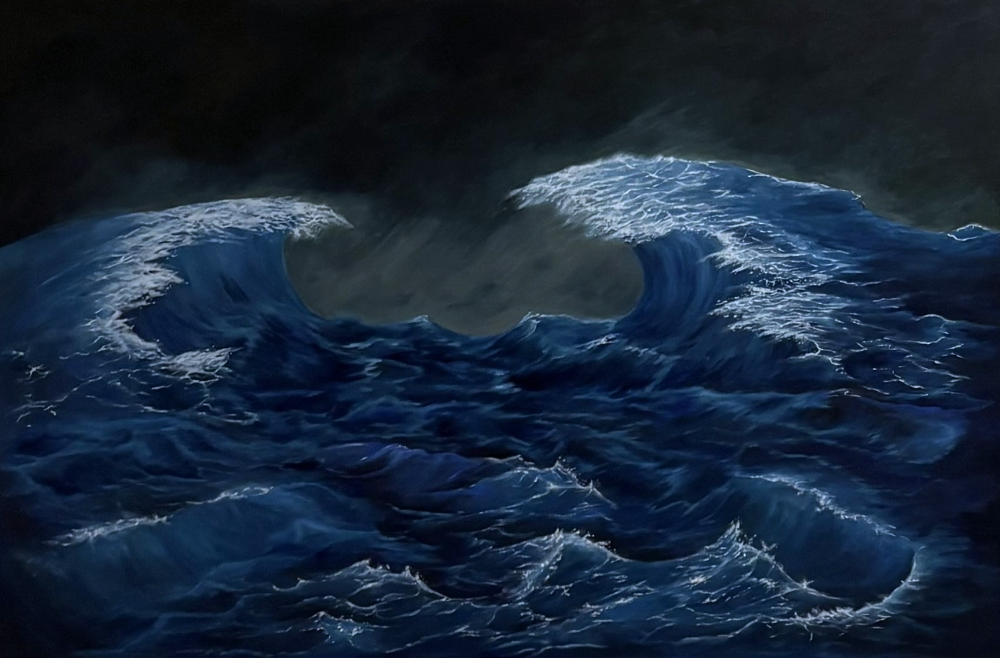
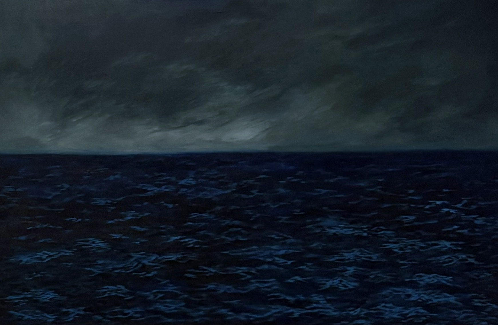

Room II · Painting
Between the Tide, 2026
Oil on canvas · two panels
Panel one

Panel two

Together

About the work
Mercadies McDonald
Between the Tide, 2026
Lives and works on Camden and Wollongong, Dharawal Country
Oil on canvas
Two panels, each 60.9 × 91.4 × 5 cm
For sale · Price on enquiry
Between the Tide 2026 explores the emotional experience of living in uncertainty during the transition into adulthood. Using the ocean as a metaphor, the two seascapes set turbulence against stillness, and tension against release. Shaped by financial instability and competing expectations, it asks how a painted seascape can evoke emotional overwhelm. Rather than asking viewers to understand uncertainty intellectually, it invites them to inhabit it through their own perception. Built through slow layering, blending and dry brushing, with expressive strokes left visible, the paintings make the act of painting part of the experience.
Enquire about this work
Between the Tide 2026 is available to purchase. Price on enquiry.
Email about this painting → Next artwork: Daisy →